Grok
PasterzMa dużo owiec i jeszcze więcej pytań. Liczy na dziesięciu palcach, a gdy palców braknie, wymyśla coś sprytniejszego.
Animowany serial o pasterzu, który musi policzyć swoje owce. Każdy odcinek to jeden temat z lekcji matematyki, wyjaśniony krok po kroku.
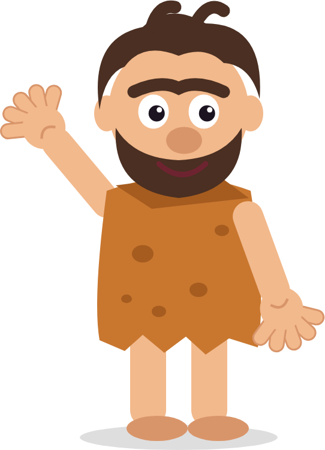
kliknij owcę!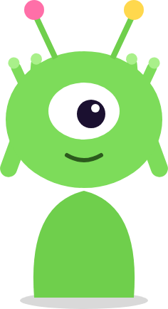
Najlepiej oglądać po kolei. W każdym są zagadki, przy których warto zatrzymać film i wziąć kartkę.
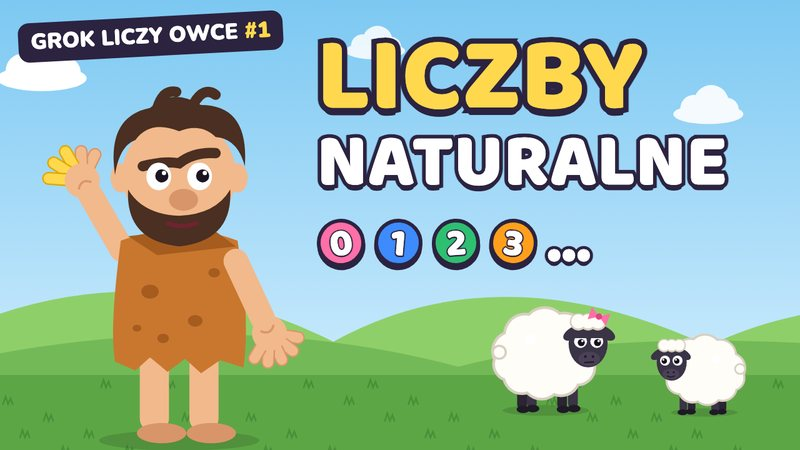
4:22Grok nie zna liczb. Skąd się wzięło liczenie, po co nam setki i dlaczego zero to wielki wynalazek.
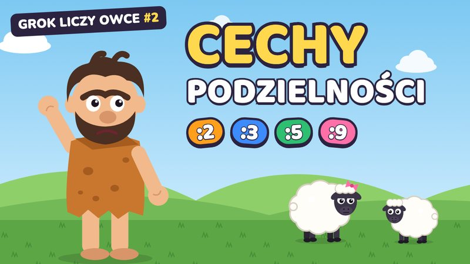
7:25Jak sprawdzić, czy liczba dzieli się przez 2, 3, 4, 5, 9 albo 10, bez liczenia wszystkiego od początku.
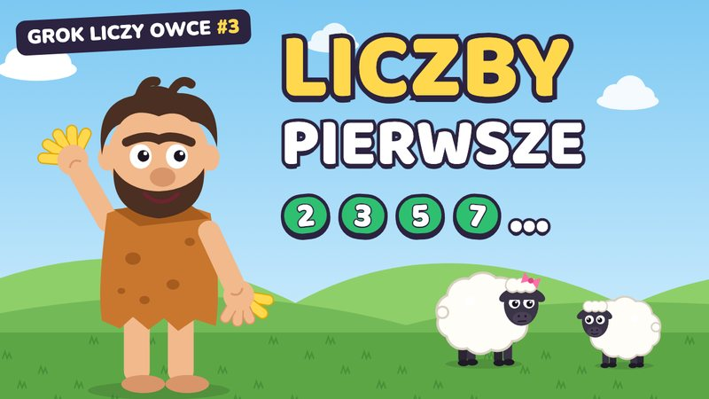
5:21Siedem owiec nie chce stanąć w równych rzędach. Dzielniki, liczby pierwsze i drzewko czynników.
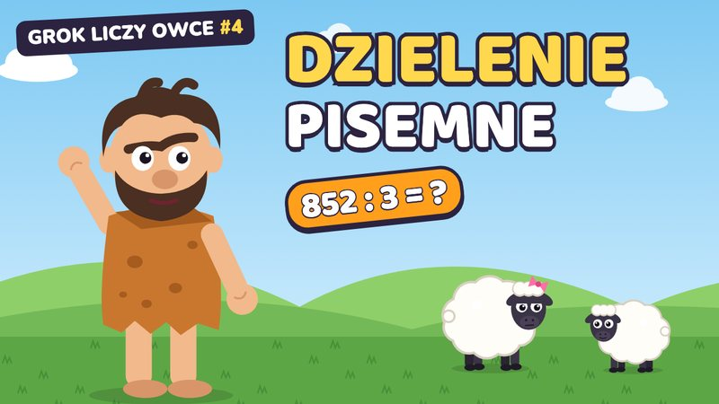
5:03852 snopki siana do trzech zagród. Dzielenie pisemne krok po kroku, z resztą i przez liczbę dwucyfrową.
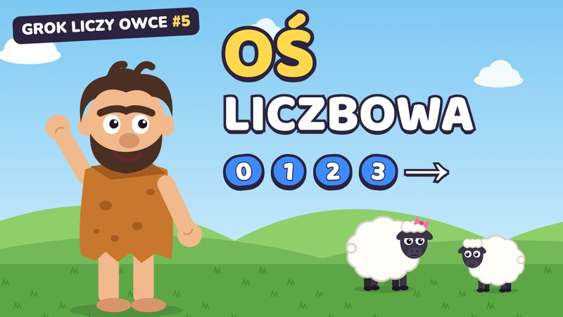
5:26Owce przy płocie to prawie oś liczbowa. Jednostka, równe odstępy i liczby schowane pod literami.
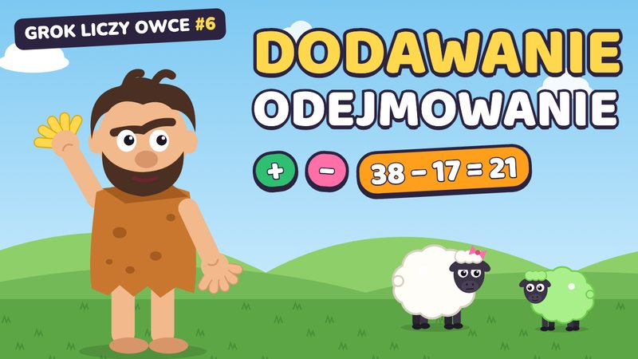
3:47Składnik, suma, odjemna, odjemnik i różnica. Przylatuje Kosmita z zielonymi owcami.
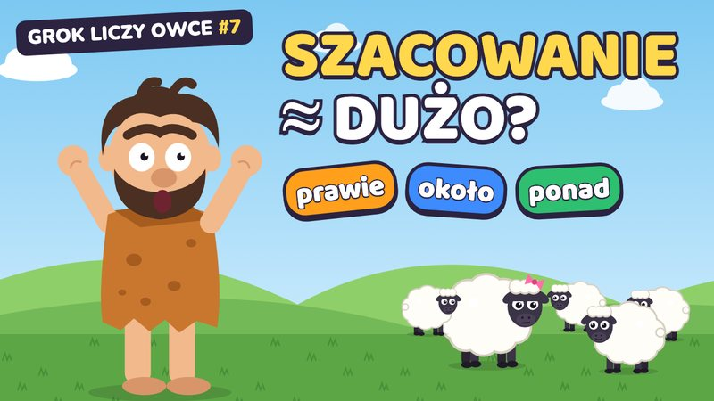
4:44„Jedna… dwie… DUŻO!” Kiedy wystarczy oszacować i jak sprawdzić, czy wynik ma sens.
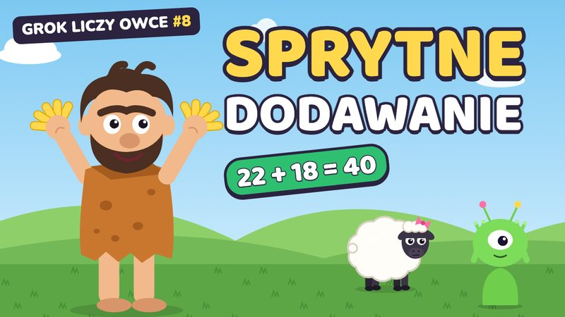
4:46Dziesięć palców kontra osiem. Dodawanie w pamięci: kolejność, pełne dziesiątki i przekładanie.
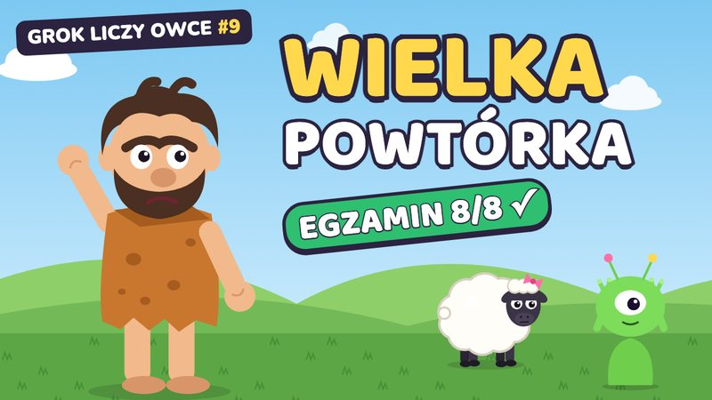
4:34Kosmiczny egzamin z ośmiu pytań. Powtarzamy wszystko o liczbach naturalnych i działaniach. Czy Grok zda?
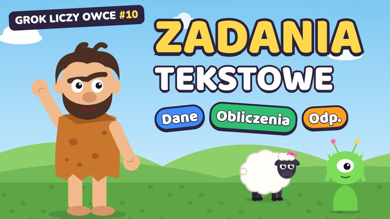
4:24Ile lat ma pasterz? Zadania tekstowe w trzech krokach: dane, obliczenia i odpowiedź pełnym zdaniem.
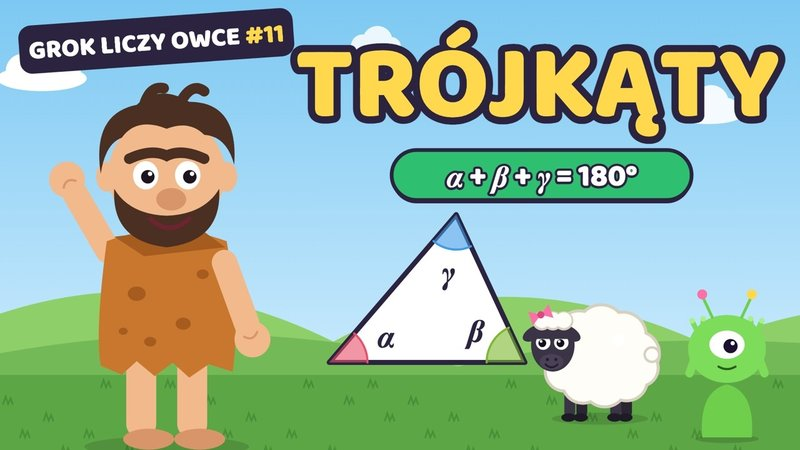
4:55Zagroda z trzech desek, przez którą ucieka Beata. Kiedy powstanie trójkąt, suma kątów i rodzaje trójkątów.
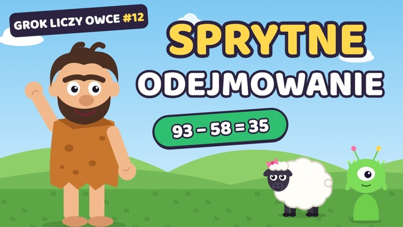
4:3593 owce, a 58 idzie do rzeki. Cztery sprytne sposoby odejmowania w pamięci, bez ani jednego kamyka.
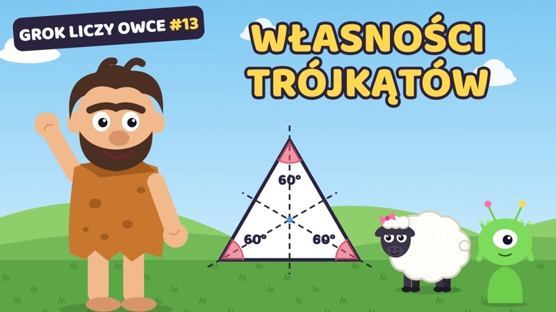
4:16Trzy deski po 3 m i żadna nie jest najdłuższa. Trójkąty równoboczne, równoramienne i różnoboczne, ich kąty i osie symetrii.
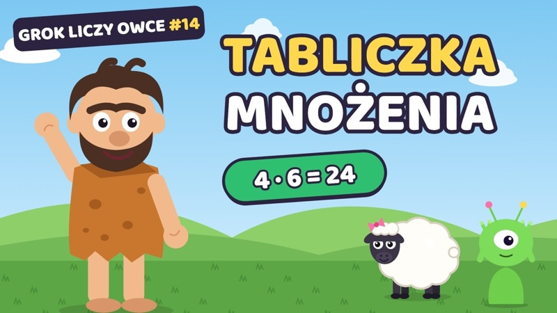
4:47Kosmita liczy od razu: cztery razy sześć, dwadzieścia cztery. Mnożenie zamiast dodawania, mnożenie przez 0 i 1, czynniki i iloczyn.
24 owce i 4 zagrody. Dzielenie z pomocą tabliczki mnożenia: dzielna, dzielnik, iloraz i dlaczego przez 0 nie dzielimy.
Wkrótce na YouTubeGrok wciąż liczy. Następne tematy są w drodze, a owiec też ciągle przybywa.
Trójka, która w każdym odcinku mierzy się z jednym tematem z lekcji matematyki.
Ma dużo owiec i jeszcze więcej pytań. Liczy na dziesięciu palcach, a gdy palców braknie, wymyśla coś sprytniejszego.
Nosi różową kokardę i zawsze stoi tam, gdzie nie trzeba. Przez nią Grokowi nic nie wychodzi równo, a lekcja robi się ciekawsza.
Ma osiem palców, więc liczy po osiem. Przylatuje z zagadkami i zielonymi owcami, a czasem urządza kosmiczny egzamin.
Każdy temat zaczyna się od kłopotu Groka: owce do policzenia, siano do podzielenia albo zagadka od Kosmity.
Gdy na ekranie pojawia się Zatrzymaj film!, pora wziąć kartkę i sprawdzić się samemu.
Na koniec zasady do przepisania do zeszytu i szybki quiz „prawda czy fałsz”.
Teleturniej w przeglądarce: 12 pytań, drabinka do miliona i trzy koła ratunkowe. Spróbuj pytania na rozgrzewkę:
Mini-gra z Grokiem i owcą Beatą: czternaście pastwisk z tematami z odcinków. Ustawiaj owce w rzędy i mnóż, odejmuj sprytnie w pamięci, szacuj stado, stawiaj owce na osi, dziel je na zagrody, układaj prostokąty, szukaj okrągłych par, dziel pisemnie, buduj trójkątne zagrody i rozpoznawaj trójkąty z kosmosu. Na koniec wielka powtórka na czas, zanim Beata zaśnie. Za każde pastwisko są trzy gwiazdki.
Odcinki trzymają się programu matematyki dla klas 4 i 5. Dobrze sprawdzają się na początku lekcji, przy powtórce przed klasówką i wtedy, gdy trzeba nadrobić zaległości.
Odcinki są za darmo na YouTube, z polskimi napisami i rozdziałami, w playlistach dla klasy 4 i klasy 5.